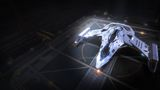

Макс. скорость / с форсажем
299 / 398 м/с (быстрый)
Gutamaya взяла классический истребитель, заменила одно малое крепление на среднее, повысила скорость и слегка укрепила корпус. При этом она сохранила фирменную манёвренность Eagle. Корабль всё ещё очень хрупок и вместе с базовой моделью находится внизу боевого рейтинга. Зато из двух недорогих истребителей он боеспособнее и позволяет освоить манёвренный бой в имперском стиле.

У этого корабля оценка пригодности по шкале 1–100 отражает возможности полностью улучшенной у инженеров сборки для этой роли в сравнении со всеми другими кораблями той же роли. См. как выставляются оценки кораблям.
Imperial Eagle — изящная переработка истребителя Core Dynamics от Gutamaya. Он сохраняет крохотный и манёвренный корпус Eagle, но адаптирует его для Империи: выше максимальная скорость, немного прочнее корпус, а одно малое крепление заменено на среднее, что заметно прибавляет огневой мощи. Та же проворная стрела, только быстрее, красивее и чуть крепче.
Но это по-прежнему стеклянная пушка. Корпус и щиты остаются слабыми, есть одно внешнее крепление и один небольшой военный отсек, а три орудия, даже со средним, наносят скромный урон. Imperial Eagle побеждает так же, как базовая модель: пользуется скоростью и манёвренностью и не подставляется под вражеские орудия. Это более изящный недорогой истребитель, который всё так же не прощает ошибок.
Быстрый манёвренный бой без больших затрат: тренировки с чуть большей огневой мощью и скоростью, чем у базового Eagle, безопасные районы добычи и эффектные недорогие вылеты для пилотов Империи.
Четыре особенности определяют Imperial Eagle в бою:
Корабль всё ещё хрупок: тонкий корпус и слабые щиты, одно внешнее крепление, силовая установка класса 3 и всего три орудия. Среднее орудие и усиленный корпус помогают, но ему не сравниться с другими малыми истребителями ни по защите, ни по урону. Ради скорости он немного жертвует выдающейся манёвренностью базового Eagle. Это более изящная стеклянная стрела, но всё равно стеклянная.
Отличная манёвренность и максимальная скорость 480 м/с после инженерных улучшений поднимают оценку. Однако вооружение 1M·2S на силовой установке класса 3, щит ~104 МДж и броня 108 оставляют корабль внизу рейтинга.
Итоговая оценка 54/100 основана на критериях боевой роли, расположенных по приоритету. У каждого критерия есть вес (доля от 100). Корабль получает часть баллов по каждому из них в зависимости от того, как выглядит на фоне всех соперников. Эти баллы складываются в итоговую оценку.
| Критерий | Баллы | Почему столько |
|---|---|---|
| Орудийные крепления | 15/30 | 1 среднее и 2 малых крепления. Среднее заметно добавляет мощи относительно базового Eagle с 3S, но корабль уступает всем более дорогим малым истребителям (Cobra Mk V 3M 2S, Courier 3M, Vulture 2L). Мультипушка с «Перегрузкой» и коррозионными снарядами вместе с двумя импульсными лазерами дают лишь средний длительный урон в секунду. |
| Распределитель энергии | 5/10 | Распределитель энергии всего класса 2. Одновременно питать три орудия и форсаж трудно без «Ускоренной зарядки» и «Сверхпроводников». Для сборки из трёх орудий этого хватает, но сильной стороной не становится. |
| Щит | 6/15 | Базовый щит ~104 МДж, в классе A ~190 МДж, после инженерных улучшений всего ~360 МДж с двухконтурным щитом 3C и одним усилителем с «Усиленной конструкцией». Даже с полным оснащением щит слаб: корабль выживает, пока по нему не попадают. |
| Броня и отсеки | 6/15 | Базовая броня 108 на корпусе массой 50 т, один военный отсек класса 2 и скромные внутренние отсеки (3·2·1·1·1·1). Усилители с «Усиленной конструкцией» дают лишь ~450 эффективной брони, всё ещё тонкой как бумага. Это слабейшая сторона корпуса. |
| Манёвренность | 18/20 | Отличная базовая манёвренность становится выдающейся с инженерными улучшениями: 299/398 м/с в штатной сборке и ~480 м/с на форсаже после «Грязной настройки двигателей». Лучшая управляемость среди соперников и единственная причина, по которой корабль годится для боя. |
| Оснащение и гибкость | 4/10 | Единственное внешнее крепление вынуждает возложить всю защиту на один усилитель щита. Это немного компенсируют малая площадка, на которую можно сесть где угодно, и отсутствие требований к рангу и разрешению при цене ~73 тыс. кр. Но гибкости почти нет. |
| Взвешенный итог | 54/100 | Совпадает с оценкой пригодности этого корабля для выбранной роли в заголовке. |
Веса отражают редакционную расстановку приоритетов для этой роли, а не формулу из игры. Длина полосы показывает, какую часть баллов корабль получил по критерию: самые длинные принесли больше всего баллов, самые короткие показывают слабые места. См. как выставляются оценки кораблям.
В каждой таблице корабли оцениваются именно для боя, с разделением по размерам посадочных площадок. Столбец Орудийные крепления показывает набор орудийных креплений, то есть основу под вооружение. Оценка пригодности по шкале 1–100 та же, что и на остальном сайте.
| Корабль | Класс | Орудийные крепления | Плюсы и минусы | Оценка |
|---|---|---|---|---|
| Kestrel Mk II | Малый | 3L 2S | Оценка выше; крепления; гибкостьБроня | 85 |
| Vulture | Малый | 2L | Оценка выше; манёвренность; щитБроня | 80 |
| Cobra Mk V | Малый | 3M 2S | Оценка выше; гибкость; крепленияРаспределитель | 78 |
| Imperial Courier | Малый | 3M | Оценка выше; манёвренность; щитБроня | 70 |
| Viper Mk IV | Малый | 2M 2S | Оценка выше; броня; распределительМанёвренность | 66 |
| Diamondback Explorer | Малый | 1L 2M | Оценка выше; гибкость; манёвренностьБроня | 65 |
| Viper Mk III | Малый | 2M 2S | Оценка выше; манёвренность; крепленияБроня | 63 |
| Diamondback Scout | Малый | 2M 2S | Оценка выше; гибкость; броняЩит | 60 |
| Cobra Mk III | Малый | 2M 2S | Оценка выше; манёвренность; распределительЩит | 58 |
| Eagle Mk II | Малый | 3S | Оценка выше; манёвренность; крепленияЩит | 55 |
| Imperial Eagle здесь | Малый | 1M 2S | — этот корабль (точка отсчёта) | 54 |
| Cobra Mk IV | Малый | 2M 3S | Крепления; броняОценка ниже; манёвренность | 44 |
| Sidewinder Mk I | Малый | 2S | Манёвренность; гибкостьОценка ниже; крепления | 40 |
Оценены 13 боевых кораблей с малой площадкой; лидирует Kestrel Mk II (85). Все они садятся на площадки того же класса и являются прямыми альтернативами этому кораблю.
| Корабль | Класс | Орудийные крепления | Плюсы и минусы | Оценка |
|---|---|---|---|---|
| Federal Corvette | Большой | 2H 1L 2M 2S | Оценка выше; крепления; распределительЩит | 98 |
| Imperial Cutter | Большой | 1H 2L 4M | Оценка выше; распределитель; щитМанёвренность | 91 |
| Anaconda | Большой | 1H 3L 2M 2S | Оценка выше; распределитель; щитМанёвренность | 88 |
| Imperial Clipper | Большой | 2L 2M | Оценка выше; манёвренность; распределительОрудийные крепления | 79 |
| Type-10 Defender | Большой | 4L 3M 2S | Оценка выше; крепления; броняМанёвренность | 78 |
Среди боевых кораблей с большой площадкой оценены 5; лидирует Federal Corvette (98). Это более крупные площадки и бюджеты. По характеристикам такие корабли превосходят Eagle, но требуют площадки другого класса.
| Корабль | Класс | Орудийные крепления | Плюсы и минусы | Оценка |
|---|---|---|---|---|
| Fer-de-Lance | Средний | 1H 4M | Оценка выше; манёвренность; крепленияБроня | 93 |
| Krait Mk II | Средний | 3L 2M | Оценка выше; крепления; броняРаспределитель | 90 |
| Python Mk II | Средний | 4L 2M | Оценка выше; крепления; распределительБроня | 90 |
| Mamba | Средний | 1H 2L 2S | Оценка выше; распределитель; крепленияБроня | 89 |
| Alliance Chieftain | Средний | 2L 1M 3S | Оценка выше; манёвренность; броняЩит | 88 |
| Alliance Challenger | Средний | 1L 3M 3S | Оценка выше; броня; щитМанёвренность | 86 |
| Corsair | Средний | 3L 3M | Оценка выше; распределитель; гибкостьМанёвренность | 85 |
| Federal Assault Ship | Средний | 2L 2M | Оценка выше; распределитель; манёвренностьЩит | 84 |
| Python | Средний | 3L 2M | Оценка выше; распределитель; гибкостьМанёвренность | 83 |
| Federal Gunship | Средний | 1L 4M 2S | Оценка выше; распределитель; броняМанёвренность | 82 |
| Alliance Crusader | Средний | 1L 2M 3S | Оценка выше; распределитель; броняМанёвренность | 80 |
| Federal Dropship | Средний | 1L 4M | Оценка выше; броня; крепленияМанёвренность | 76 |
| Krait Phantom | Средний | 2L 2M | Оценка выше; гибкость; манёвренностьБроня | 74 |
Среди боевых кораблей со средней площадкой оценены 13; лидирует Fer-de-Lance (93). Это более дешёвые корпуса и площадки поменьше. По цифрам они обходят этот корабль, но относятся к другому классу площадок.
При цене ~73 тыс. кр. Империи Eagle очень дёшев: дороже базового Eagle, но всё равно стоит копейки. Продаётся на станциях Империи без требования к рангу. Небольшие модули делают инженерные улучшения недорогими.
Это выбор ради цены и стиля: почти бесплатный имперский истребитель, на котором можно освоить манёвренный бой или просто полетать ради управляемости. Немногие оставляют его надолго, но для пилотов Империи это обаятельный бюджетный корабль.
Меньше 75 тыс. кредитов за быстрый манёвренный имперский истребитель со средним орудием. Более красивая и мощная бюджетная стрела продаётся на станциях Империи.
Быстрая и манёвренная боевая сборка вокруг среднего орудия. Начальная версия требует только покупки модулей, класс A даёт базовую боевую сборку, а инженерные улучшения доводят до максимума манёвренность, скорость и слабый щит.
| Отсек | Начальная · только покупка | Класс A · без улучшений | С инженерными улучшениями | Примечания |
|---|---|---|---|---|
| Орудийные крепления | ||||
| Среднее 1 | 2F Импульсный лазер (поворотное крепление) | 2F Мультипушка (поворотное крепление) | G5 Перегрузка + Коррозионные снаряды | Главное орудие корабля: сначала купите дешёвый импульсный лазер, потом замените его на мультипушку с поворотным креплением при переходе на класс A. «Перегрузка» и коррозионные снаряды обеспечат мощный разовый залп. |
| Малое 1 | 1G Импульсный лазер (поворотное крепление) | 1G Импульсный лазер (поворотное крепление) | G5 Эффективный + Теплоотвод | Малый вспомогательный импульсный лазер. «Эффективный» и Теплоотвод позволяют вести огонь без перегрева при скромном запасе энергии. |
| Малое 2 | 1G Импульсный лазер (поворотное крепление) | 1G Импульсный лазер (поворотное крепление) | G5 Эффективный + Теплоотвод | Второй малый импульсный лазер. «Эффективный» и Теплоотвод позволяют долго наносить понемногу урона без перегрева. |
| Внешние крепления | ||||
| Внешнее 1 | 0A Усилитель щита | 0A Усилитель щита | G5 Усиленная конструкция + Суперконденсаторы | Единственное внешнее крепление занимает усилитель щита. «Усиленная конструкция» увеличивает базовую прочность слабого двухконтурного щита в МДж. |
| Основные модули | ||||
| Обшивка | Лёгкий сплав | Композит военного класса | G5 Усиленная конструкция + Углублённое бронирование | |
| Силовая установка | 3E Силовая установка | 3A Силовая установка | G5 Перегрузка + Рассеивание тепла | Силовая установка всего класса 3, поэтому «Перегрузка» даёт запас мощности на три орудия, щит и усилитель. «Рассеивание тепла» отводит лишнее тепло. |
| Маневровые двигатели | 3E Маневровые двигатели | 3A Маневровые двигатели | G5 Грязная настройка двигателей + Форсированные двигатели | В первую очередь поставьте класс A и улучшите у инженеров: скорость и манёвренность — единственная настоящая защита корабля. «Грязная настройка двигателей» и «Форсированные двигатели» доводят обе характеристики до максимума. |
| Рамочно-сместительный двигатель (FSD) | 3E Рамочно-сместительный двигатель (FSD) | 3A Рамочно-сместительный двигатель (FSD) | G3 Увеличенная дальность (нет экспериментального эффекта) | Класс A нужен, чтобы добираться до районов добычи и сдавать награды. «Увеличенной дальности» G3 Увеличенная дальность хватает: сверхдальние прыжки в бою не нужны. |
| Система жизнеобеспечения | 1E Система жизнеобеспечения | 1D Система жизнеобеспечения | G5 Облегчённый (нет экспериментального эффекта) | Класс D экономит массу, Облегчённый снижает её ещё сильнее; у модуля жизнеобеспечения нет экспериментального эффекта. |
| Распределитель энергии | 2E Распределитель энергии | 2A Распределитель энергии | G5 Ускоренная зарядка + Сверхпроводники | Поставьте класс A пораньше: распределитель класса 2 с трудом питает три орудия и форсаж одновременно. «Ускоренная зарядка» и «Сверхпроводники» решают эту проблему. |
| Сенсоры | 2E Сенсоры | 2D Сенсоры | G5 Облегчённый (нет экспериментального эффекта) | Поставьте класс D и облегчённое улучшение. В бою большая дальность сенсоров не нужна, а лёгкому кораблю полезно снизить массу. |
| Топливный бак | 2C Топливный бак | 2C Топливный бак | (нет чертежа улучшения) | Штатный бак. Ёмкость фиксирована; инженерных улучшений для него нет. |
| Военные отсеки | ||||
| Военный 1 | 2D Усилитель корпуса | 2D Усилитель корпуса | G5 Усиленная конструкция + Углублённое бронирование | Усиленная конструкция усилитель корпуса в военном отсеке дешевле всего даёт заметную прибавку прочности почти бумажному корпусу. |
| Дополнительные отсеки | ||||
| Размер 3 | 3E Генератор щита | 3C Генератор двухконтурного щита | G5 Усиленный + Быстрая зарядка | Генератор двухконтурного щита: слабому щиту нужно быстрое восстановление. «Усиленный» поднимает прочность в МДж, «Быстрая зарядка» ускоряет восстановление. |
| Размер 2 | 2E Грузовой стеллаж | 2A Банк щитовых ячеек | G4 Специализированный + Эффективные ячейки (Boss Cells) | Необязательно, низкий приоритет. Специализация снижает всплеск нагрева и энергопотребления банка. Позволяет экстренно восстановить щит. |
| Размер 1 | — | 1D Усилитель корпуса | G5 Усиленная конструкция + Углублённое бронирование | Малый усилитель корпуса. «Усиленная конструкция» понемногу укрепляет тонкую броню корпуса. |
| Размер 1 | — | 1D Усилитель модулей | (нет чертежа улучшения) | Усилитель модулей распределяет урон пробивших корпус попаданий между внутренними модулями. Инженерное улучшение недоступно. |
| Размер 1 | — | 1D Усилитель корпуса | G5 Усиленная конструкция + Углублённое бронирование | Необязательно, низкий приоритет. Увеличенный радиус сканирования расширяет зону покрытия зондов. Позволяет картографировать планеты для сбора исследовательских данных. |
| Размер 1 | — | 1A Банк щитовых ячеек | G4 Специализированный + Эффективные ячейки (Boss Cells) | Необязательно, низкий приоритет. Специализация снижает всплеск нагрева и энергопотребления банка. Позволяет экстренно восстановить щит. |
| Планировщики и экспорт | ||||
| Открыть в Coriolis | открыть | открыть | открыть | Открывается на coriolis.io одним нажатием. |
| Открыть в EDSY | открыть | открыть | открыть | Открывается на edsy.org одним нажатием. |
| Скопировать SLEF | Копирует исходные данные формата экспорта оснащения корабля (SLEF) для выбранного варианта. | |||
Как и базовый Eagle, имперский вариант выживает, пока по нему не попадают. Улучшите у инженера маневровые двигатели и двухконтурный щит, начинайте атаку со среднего орудия и держитесь в слепой зоне противника. Дополнительная скорость помогает выйти из боя, но хрупкий корпус всё ещё наказывает за ошибки.
Купите корпус (~73 тыс. кр.) на станции Империи и поставьте модуль 3E — генератор щита, модуль 0A — усилитель щита и модуль 2D в военный отсек — усилитель корпуса. Пока сохраните штатный лёгкий сплав для обшивки; композит военного класса купите при переходе на класс A.
Оснастите все три крепления недорогими импульсными лазерами на поворотных креплениях. В начальной сборке это 2F в среднее крепление и по 1G в каждое малое. Мультипушка появится в сборке класса A.
Пока оставьте четыре дополнительных отсека размера 1 пустыми (—) и поставьте недорогой грузовой стеллаж в отсек размера 2. В классе A внутренние отсеки займут щитовые ячейки и второй усилитель корпуса. Сканера нет: это чисто боевая сборка.
Держите высокую скорость и маневрируйте: начинайте атаку со среднего орудия, держитесь на хвосте и уходите из боя, если щиты упали.
Приоритет перехода на класс A для скоростного истребителя:
Пока вы на верфи, заполните внутренние отсеки: модули 2A и 1A — банки щитовых ячеек, второй модуль 1D — усилитель корпуса и модуль 1D — усилитель модулей. В отсеке размера 1, где раньше стоял сканер, теперь третий усилитель корпуса.
Как и у базовой модели, скорость и манёвренность — единственная настоящая защита Imperial Eagle. Поставьте класс A и улучшите маневровые двигатели раньше всего остального.
Стандартная боевая схема с упором на манёвренность и скорость. Закрепите чертежи, чтобы применять улучшения G1→G5 удалённо; за экспериментальными эффектами прилетайте лично.
| Модуль | Чертёж | Экспериментальный эффект | Инженер |
|---|---|---|---|
| Маневровые двигатели (3) | Грязная настройка двигателей (G5) | Форсированные двигатели | Professor Palin / Mel Brandon |
| Силовая установка (3) | Перегрузка (G5) | Рассеивание тепла | Hera Tani |
| Мультипушка (2) | Перегрузка (G5) | Коррозионные снаряды | Tod McQuinn |
| Импульсные лазеры (1) | Эффективный (G5) | Теплоотвод | Broo Tarquin |
| Распределитель энергии (2) | Ускоренная зарядка (G5) | Сверхпроводники | The Dweller |
| Двухконтурный щит (3) | Усиленный (G5) | Быстрая зарядка | Lei Cheung |
| Усилитель щита | Усиленная конструкция (G5) | Суперконденсаторы | Didi Vatermann |
| Обшивка | Усиленная конструкция (G5) | Углублённое бронирование | Selene Jean |
| Усилитель корпуса | Усиленная конструкция (G5) | Углублённое бронирование | Selene Jean |
Очень небольшие: модулей мало, и все они небольшие. Это один из самых дешёвых боевых кораблей для инженерных улучшений. При полном запасе материалов траты почти незаметны. При необходимости уточните точное количество для каждого чертежа.
Примерное изменение параметров между тремя вариантами (цифры ориентировочные, а не точные результаты улучшений):
| Показатель | Начальная | Класс A | С инженерными улучшениями |
|---|---|---|---|
| Макс. скорость (с форсажем) | 398 м/с | 398 м/с | ~480 м/с |
| Манёвренность | отличная | отличная | высшая |
| Щит (МДж) | ~135 | ~190 | ~360 |
| Броня (эфф.) | 108 | ~215 | ~490 |
| Длительный урон/с | от низкого до среднего | от низкого до среднего | средний |
Композит военного класса и три усиленных усилители корпуса поднимают эффективную броню с хрупких 108 до ~490. Банки щитовых ячеек с эффектом Boss Cells пополняют двухконтурный щит по необходимости. После инженерных улучшений корпус выдерживает намного больше, чем базовый Eagle. Он всё ещё хрупок и побеждает скоростью и манёвренностью, но дополнительная скорость, броня и огневая мощь делают его более боеспособным из двух недорогих истребителей.
Подойдёт любой район добычи с низкой опасностью рядом с аванпостом. Выбирайте системы на стороне Империи, чтобы первые боевые облигации повышали репутацию. Рядом со своей базой это недорогой и стильный способ практиковать манёвренный бой.
Imperial Eagle — это Eagle в доработанном виде. Он быстрее, красивее и чуть крепче, а среднее орудие добавляет огневой мощи, не лишая фирменной манёвренности. Это всё ещё стеклянная стрела, которая не прощает ошибок, но из двух бюджетных истребителей он боеспособнее и позволяет учиться манёвренному бою в имперском стиле.
Цифры на этой странице сверены по следующим источникам.